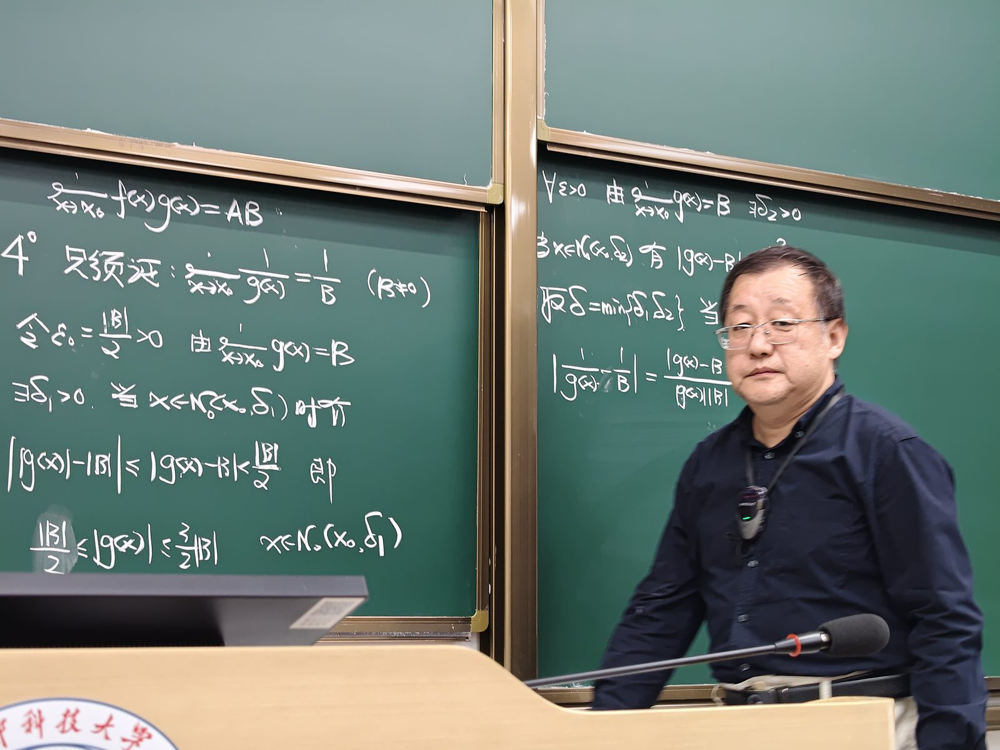
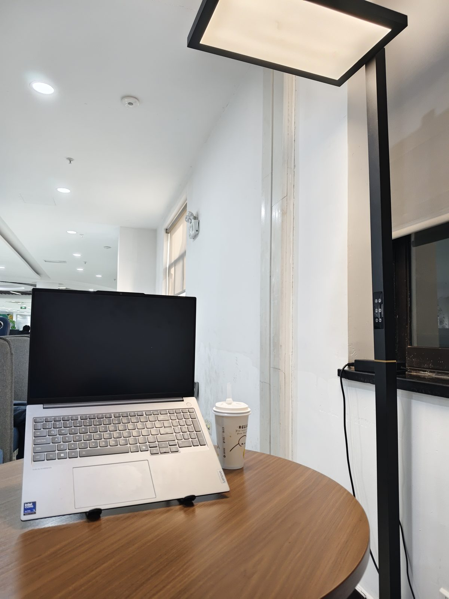
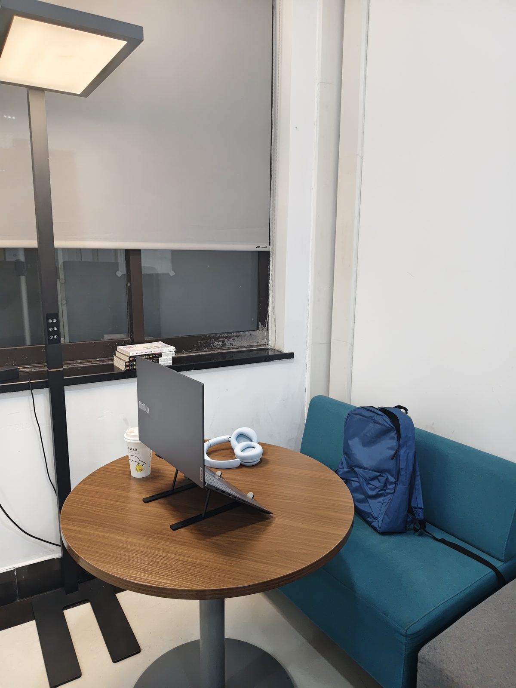
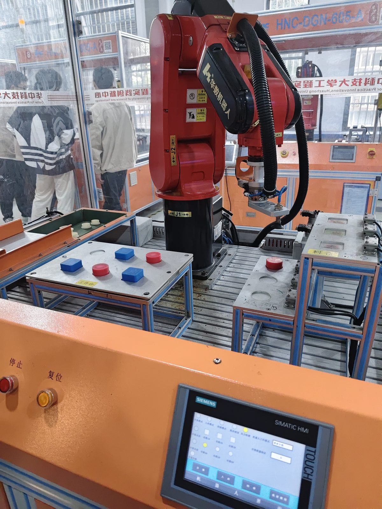
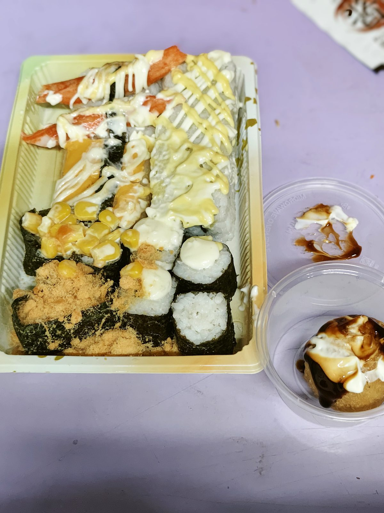
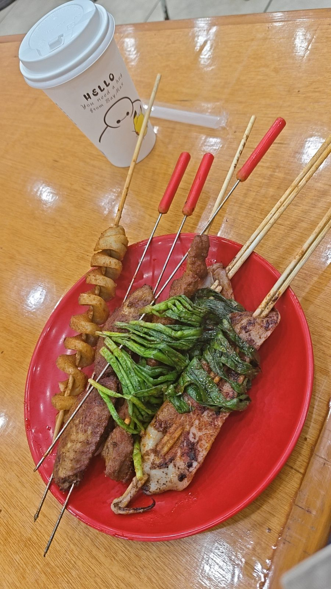

我的日常
作息不算严格，但每天大概都长这样，我自己挺舒服的。
平平无奇的一天
按时间往下看，就是我的一整天。
07:20 · 早晨
起来，洗漱，出门
作息比较规律，闹钟响一次就能起，室友说我是寝室的人形闹钟。
08:00 · 上课
早八教室，黑板永远是满的
坐在中间偏后的位置，笔记记得很认真，偶尔也会盯着窗外发呆。
12:00 · 午饭
一天里最期待的二十分钟
和室友纠结"吃什么"纠结到食堂门口，最后大概率还是老地方。
15:00 · 下午
图书馆，一杯奶茶的时间
靠窗的位置最抢手，抢到了就是赚到，能安安静静坐一整个下午。
23:30 · 深夜
看两章小说，然后睡
躺床上看网文，通常看两章就困了，效果比闹钟还稳定。
上课和自习
大部分时间都花在这两件事上。




吃这件小事
喜欢美食，所以吃这件事值得单独拿出来讲。



最近在……
会随时更新的三件小事。
在听
慢歌居多，走路会不自觉打拍子
在看
一本推理小说，猜错犯人已经猜了三次
在吃
学校后门那家面，一周去了四次
一天里拍的照片都收在相册里
去翻相册
黄昏、夜路、小吃街，全都有。